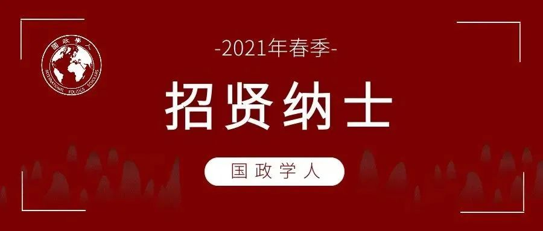
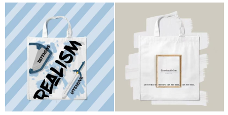

收录于合集

平台简介
国政学人是中国国际关系与政治学学界知名学术平台，专注相关领域的知识传播与学术研究事业。国政学人团队汇集了上百位来自海内外名校的青年学人。读者定位高水平研究者，影响受众已覆盖国内相关领域所有科研院所，并向国际拓展。目前，国政学人以高质量外文编译为特色，并成长为中国国际关系学界规模与影响力最大的编译平台。2021年初，我们主办的《国际关系前沿》电子学习资料开始上线。
国政学人形成了较为完整的学术交流体系，包括名家讲坛、名家访谈、青年讲坛与学子沙龙，先后邀请了秦亚青、唐世平、庞中英等知名学者以及十余位青年学者，为广大师生带来了一场场知识盛宴。
国政学人已形成集网站、微信公众平台、微博、知乎、B站、头条为一体的新媒体矩阵，累计关注达数十万人。此外，我们先后与知名学术出版社、媒体、智库建立了友好合作关系，为团队成员创造了无限的信息、资源和机遇。
“国政学人”官网
www.irscholars.org; http://115.238.178.234:8090
“国政学人”微博
@国政学人
“国政学人”B站
up主：国政学人

招募岗位
****编译部（编译员）
工作内容：
➢译介国际关系与政治学领域权威期刊学术文章，并对所译介文章发表原创评述，同时参与审校。
招募条件：
➢政治学一级学科下的国际政治、国际关系、外交学或中外政治制度（含比较政治）专业本硕博学生，致力于从事国政国关领域学术研究，有一定专业积累，具备优秀英语水平（掌握其他语言可加分），有原创写作能力和批判性思维，在本平台工作六个月以上者优先。
相关说明：
➢选文上，我们将尊重编译员现有的研究兴趣与方向，不定期有专业领域的前辈、老师提供文章推荐和学术指导。工作量上，编译机制较为成熟，校对审核体系完善，安排合理。由于编译团队优秀成员较多，且发文量有限，或许你并没有足够多的机会发布，但是工作量与收获程度极具性价比，请珍惜每一次编译机会。
评论部（评论员）
工作内容：
➢不定期参与领域相关项目研究，撰写原创性评论文章，撰写海外媒体稿件，工作时间弹性。
招募条件：
➢
以博士（包括在读与具有博士学位的青年教师）为主，硕士需具备媒体报刊发表经验。专业以国际关系领域为主，同时也欢迎政治学、经济学、社会学等相关专业的人才，对学术热点和国内国际新闻较为敏感，热爱思考，富有批判性思维，有领域研究专长。评论文章写作经验丰富者优先。
相关说明：
➢ 内容上我们将尊重作者自我发挥的自由度，工作时间灵活弹性，拥有相关报刊或媒体平台的发表机会及一定的劳务稿酬。
****宣传部（新媒体编辑）
工作内容：
➢宣传部负责内容包括微信版块、美工版块、微博版块、海外版块、B站版块、头条版块、文创版块。
招募条件：
➢面向热爱新媒体工作的同学招募，熟练掌握微信排版，熟练掌握美工技能，文创设计，视频剪辑，图片制作，新媒体运营经验，海外媒体运营。（具备以上一项技能即可报名）
团队福利
（一）知识共享机制，国政学人学术交流体系
1、名家学术讲坛
2、名家访谈（包括名家专访，学者巅峰对话等栏目）
【巅峰访谈】唐世平教授专访秦亚青教授：从“实证主义者”到“建构主义者”

团队成员正在采访唐世平教授
3、国政学人青年讲坛

4、青年学子沙龙
国政学人“朋辈学术沙龙”以学生为主体，分享个人学习与发展过程中的经验和收获，主要面向国政学人内部成员。
（二）内部学习资料整理
国政学人平台定期将编译过程中遇到的知识点、专有名词及学术英语材料整理为集刊，在内部传阅。
（三）升学就业经验指导
平台将为团队成员的学业规划与升学就业提供指导和帮助。包括且不限于针对 本科生 的国内推免保研经验指导、考研经验指导、海外硕士项目经验指导、就业指导；针对 硕士生 的国内申博指导、海外博士项目申请指导、海外学习与生活经验分享、就业指导；针对 博士生 的就业咨询与信息共享。
（四）超多福利掉落
1. 合作出版社与赠书福利
国政学人与多家出版机构建立了合作关系，出版社会定期为团队成员赠送专业最新书籍。
【赠书活动】你们入门国关必备的《国际政治学概论（第四版）》来了！
【赠书福利】国际关系前沿研究系列报告+著作新书推荐 | 第3期
【赠书福利】上海人民出版社 & 国政学人 新著推荐 | 第04期
【重磅荐书】中国社科出版社国际关系系列新著推荐（内含福利与优惠）
2.免费或优惠的课程资源
丰富的考研、考博、留学、论文写作以及专业领域相关课程。
3.周边文创
平台宣传部小伙伴原创设计的文创产品，有趣且美观，彰显你的“国政学人”身份！

4.内容发表或出版的机会
平台编译和创作的文章均有一定的在相关期刊杂志或媒体平台上发表的机会。此外，还可以参与策划和撰写书籍，国政学人帮助协调出版社合作出版。
5.实习机会
表现优秀者可获得实习证明，并有机会获得平台推荐资格，到知名单位进行联合实习。
更多福利等你来发现！
招募流程
声明：招募解释权归国政学人官方平台所有


国政学人
支持学术公益与知识传播
微信扫一扫赞赏作者 __赞赏
已喜欢，对作者说句悄悄话
取消 __
发送给作者
发送
最多40字，当前共字
上一页 1/3 下一页
长按二维码向我转账
支持学术公益与知识传播
受苹果公司新规定影响，微信 iOS 版的赞赏功能被关闭，可通过二维码转账支持公众号。